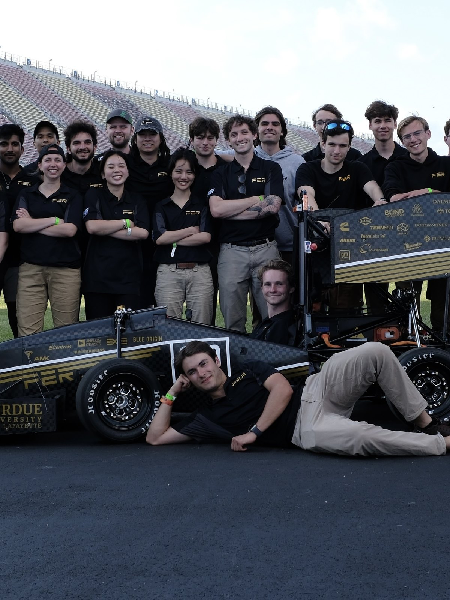
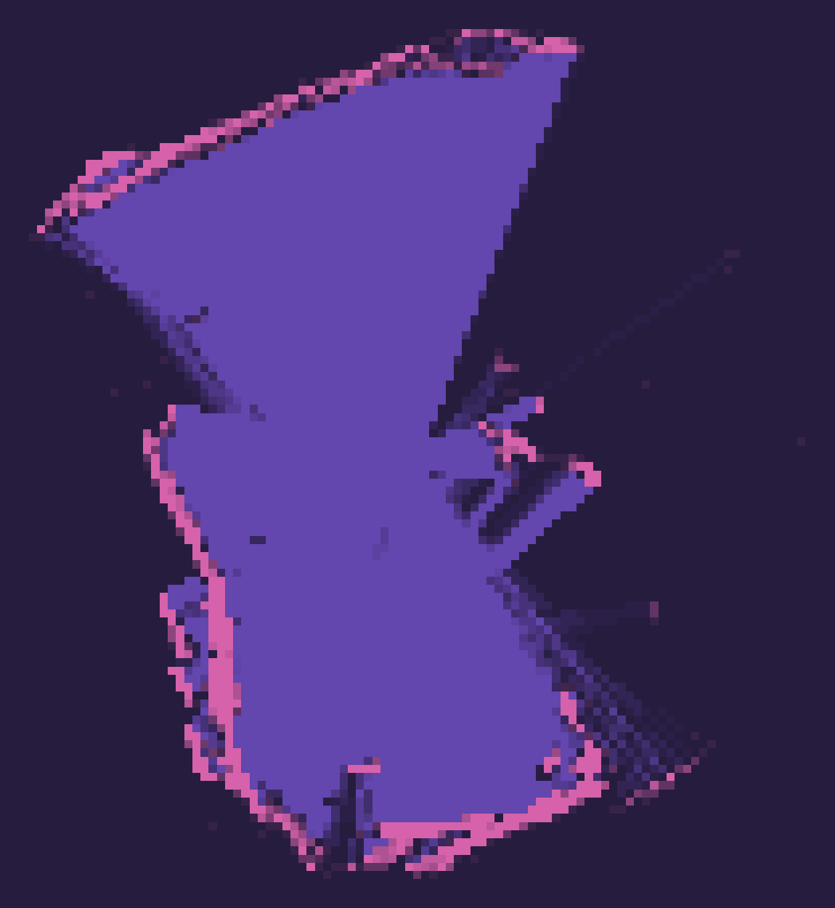

Purdue Electric Racing 2025
President of a 110-person team across seven sub-teams. That season the team took its first ever finish and its first ever top 10, in the same year.

President of a 110-person team across seven sub-teams. That season the team took its first ever finish and its first ever top 10, in the same year.

A tank-tread rover that maps an apartment with 2D LiDAR and navigates it on its own. Includes the story of why the stereo camera it was originally built around could never have worked.

Developed, manufactured and tested the second generation of our in-hub planetary gearboxes.

Developed a 3D printable cooling jacket for an electric motor in order to keep it in its optimal temperature range.

Through research and computer aided analysis, I developed a new and improved set of brakes for our 24' car.

Added data acquisition and digital readout for oil temp and engine RPM to an old VW Beetle using open source hardware.
HW Test Engineer, HV Devices, 2025 to now. System verification and validation for the Semi electrical power takeoff, plus custom DAQ systems that cut manual data acquisition by about an hour per unit.
Starship Mechanisms, 2025. Defined acceptance criteria and test procedures for V3 actuator stators, and led the failure-mode analysis that put redundancy into the design.
Engineering Program Manager on iPhone Display, 2024. Owned prototype-to-ramp build plans for display modules, coordinating across ME, EE, Optics and Process teams and holding vendors to schedule.
Hardware Test Engineer, 2023. Unblocked the Cybertruck production ramp by diagnosing and resolving a high-voltage connector test failure, and built degradation and reliability tests for pivotal components.
Planned, supported and participated in the first ever cross country EV truck trip run entirely on public charging.
Salvaged a significant product rollout to a major US grocer during the first week of my internship.